← Zurück zur Variante Kontrolle
Homepage-Test: Editorial Edits statt Karussells
One variant against today's lumas.de homepage. Same works, same prices, same navigation and promotions. What changes is how a visitor meets the assortment: as five curated edits laid out as a gallery wall, each showing a few works first and the rest on request.
Recommendation. Run it as a server-side A/B on DE, mobile and desktop together, for four full weeks. Primary metric: the share of homepage-landing sessions that reach a product page. The variant keeps today's hero carousel, puts a row of the five edits directly under it, and replaces four horizontal rails with one vertical rhythm that a visitor can either skim or open. If it lifts homepage-to-PDP without lowering add-to-cart per session, ship it. If it only lifts scrolling or reveal clicks, it has failed.
Hypothesis
For visitors who land on the DE homepage (66,792 sessions in the 28 days to 13 Oct; 70% mobile), keeping the hero carousel but replacing the four product rails with five vertically stacked, curated edits, announced by a row of edit tiles under the hero, that show priced works early and reveal more on request will raise the share of sessions that view a product page (baseline 18.9% mobile, 24.3% desktop), because today most visitors never reach a buyable work: 56% of mobile homepage sessions do not pass 10% scroll, and the rails below Bestseller get about a tenth of its clicks.
Prior knowledge: the insight ledger does not exist yet (no Confluence tree, no local mirror), so the ledger is silent. Related evidence from memory: the 24 Jul layout rollout (LUMAS-15926) cut homepage-referred PDP views by 21% after shipping against a losing ABlyft result, and the Oct 13 disclosure test showed that collapsing art into text rows was rejected; this variant never hides the art.
What you see
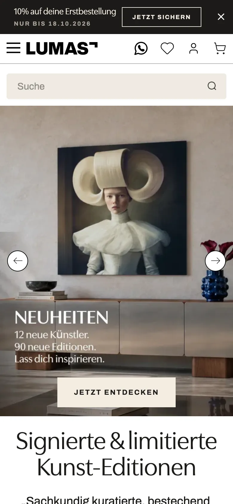
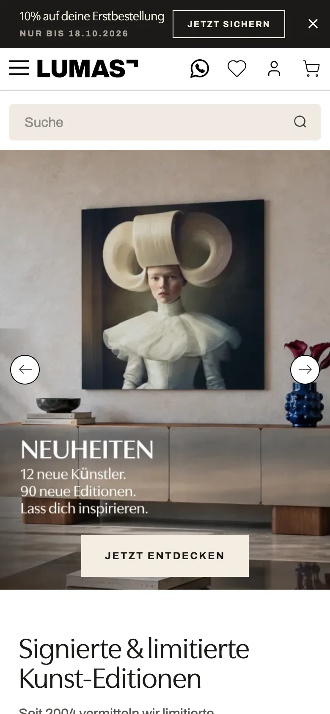
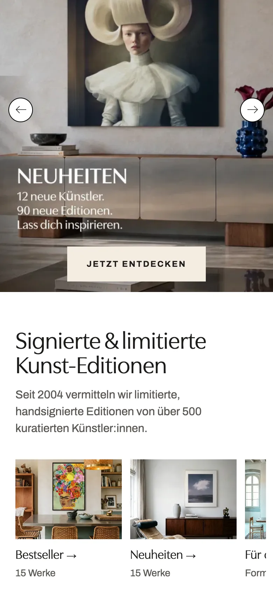
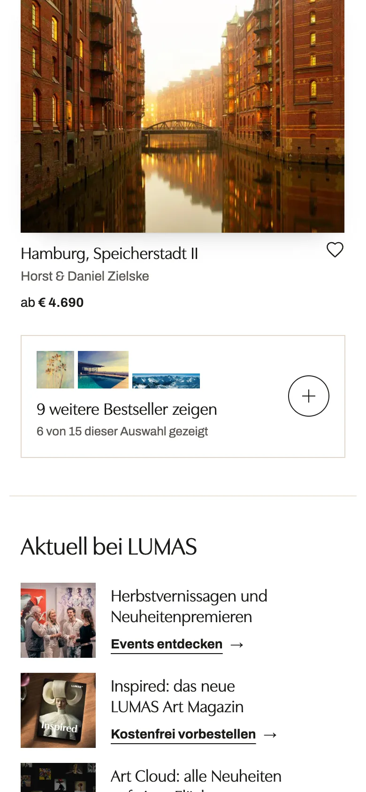
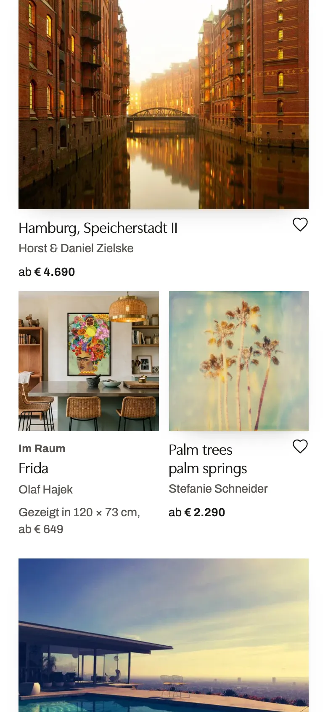
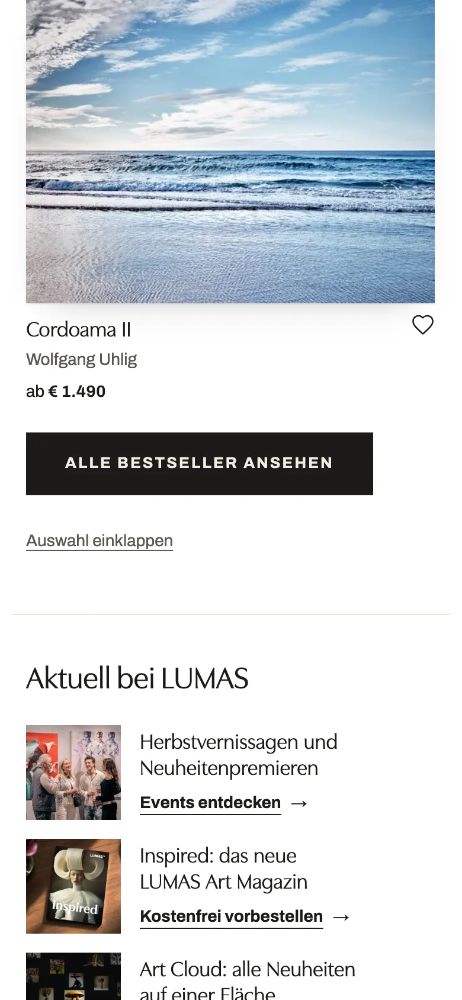
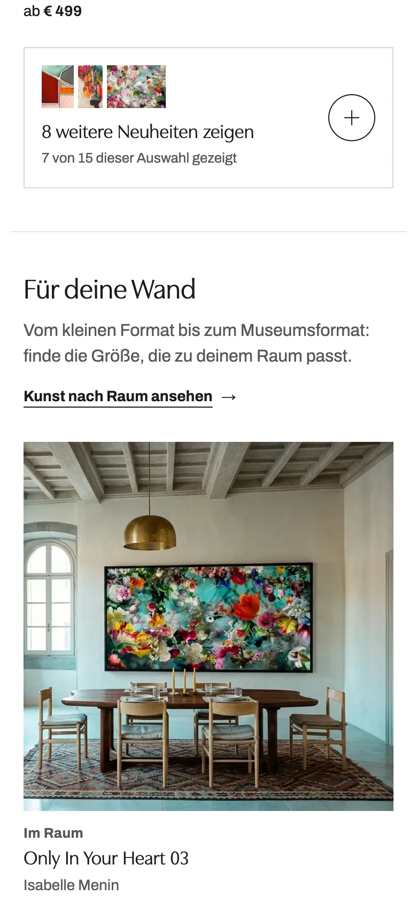
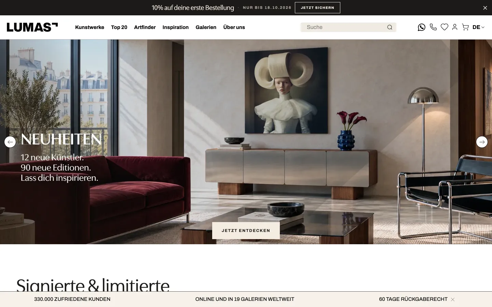
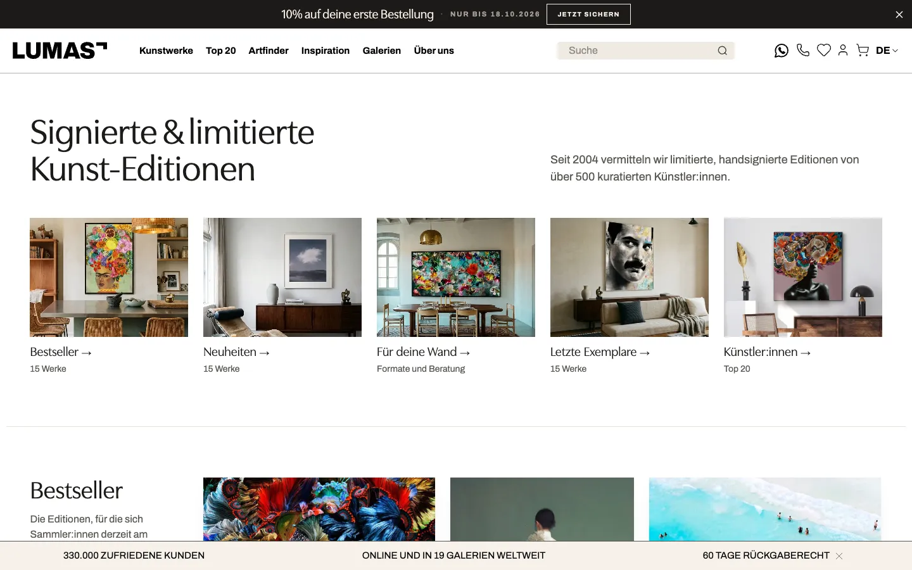
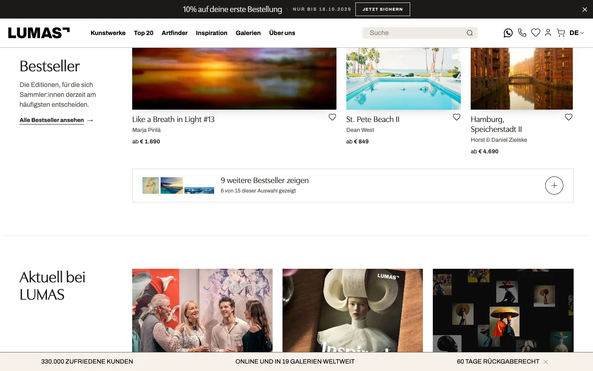
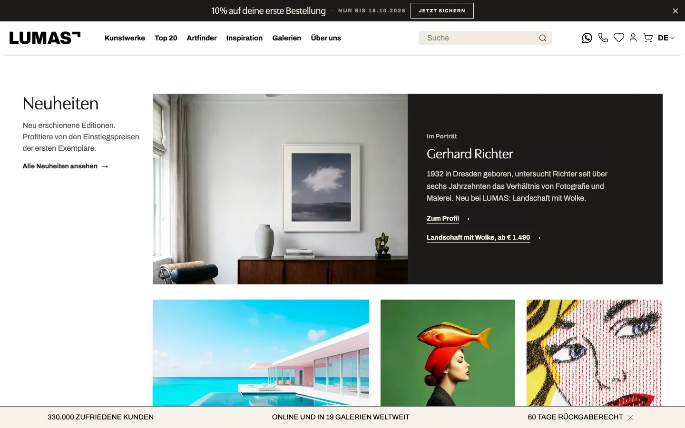
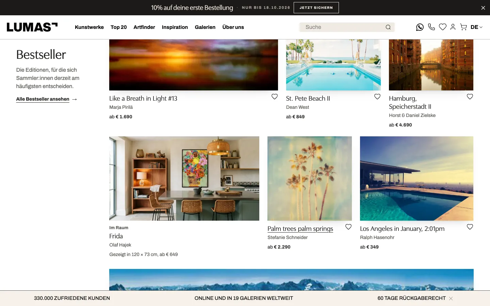
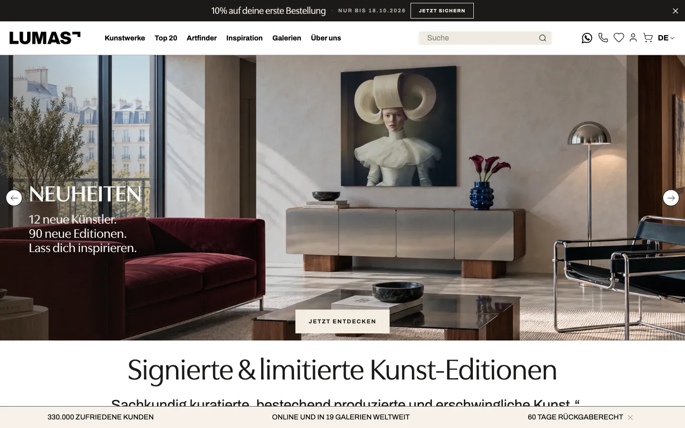
Visual hierarchy
The page runs from broad to focused, and every block has one job.
| # | Block | Job | Source in today's page |
|---|---|---|---|
| 0 | Hero carousel | Campaigns, as today | Production's two hero sub-blocks, unchanged |
| 1 | Claim (H1 and one line) heading the five edit tiles | State the proposition, show the page is finite and art-led, offer a jump to any edit | Room images from the approved pool; H1 kept word for word (SEO); lead is the approved brandbook line |
| 2 | Bestseller | The shop window: priced works first, no editorial tile above them | Bestseller rail, same order |
| 4 | Aktuell bei LUMAS | Campaigns, compact | The three campaign tiles |
| 5 | Neuheiten | Fresh work, opened by an artist story (Gerhard Richter) | Neuheiten rail |
| 6 | Für deine Wand | Narrow by format and wall; a room shows real scale; consultation where size decisions happen | Format tiles, the contact page's real service offer |
| 7 | Letzte Exemplare | Decision moment, with an explanation of what "limitiert" means | Letzte-Exemplare rail |
| 8 | Top 20 Künstler:innen | Depth: the people behind the editions | Top 20 tiles |
| 9 | Trust, Bekannt aus, reviews | Reassurance after browsing, not in front of it: one ivory band of story, facts and press, then Trustpilot | Story block, sticky-footer facts, press logos, Trustpilot |
| 10 | Clients, newsletter, footer | Client logos on white; the newsletter closes the page on charcoal and hands over to the footer | Client logos, newsletter (production form, its own colour tokens) |
Tile roles
Every tile announces what happens on click through surface, label and verb. Works carry no label because title, artist and price already say "product".
| Tile | Looks like | Goes to |
|---|---|---|
| Artwork | The whole work, bare, at its true ratio; wall label below with status (only when it differs from the edit), title, artist, "ab" price; wishlist heart | Product page |
| Im Raum | Approved LUMAS room render (the room may be cropped, the work never is); label "Im Raum", size shown, price | Product page of that work |
| Im Porträt | The one charcoal tile in an edit; artist name in Utile Display, two sentences from the live artist page | Artist page, plus a named link to one work |
| Kollektion | Muted surface, label "Kollektion", one-line scope | Filtered listing |
| Beratung | Same anatomy as a collection (gallery photo, title, one line), outlined instead of the muted surface, so it hangs on the same lines | /kontakt/ (phone, WhatsApp, live chat); galleries stay linked from the trust block |
| Gut zu wissen | Raised text tile | /unsere-editionen/ |
Grid and type system
- One grid. On desktop every section puts its title in column 1 of a 5-column grid and its content in columns 2 to 5, so edit tiles, works, campaigns, the newsletter and the press logos all start and end on the same lines. The claim spans columns 1 to 3, its lead columns 4 to 5 on a shared last baseline.
- Hang-line rows instead of masonry. Works hang in rows like a gallery hang at eye level: every work in a row shares its top edge, its height and its caption line, and every row fills the content span exactly. Row breaks are chosen like line breaks in justified text, keeping each row close to a target height (28 rem desktop, 22 tablet, 21 phone), so there are no ragged column ends and no holes. Ratios stay exact; nothing is cropped. On phones the rows alternate pairs with full-width works.
- One scale, about 1.25 per step from 16 px: claim 34 to 56 px, section titles 26 to 40, portrait names 24 to 32, names on tiles 18 to 20, lead 16 to 18, body 16, meta 14, labels 13. Each step has one role, so the page claim always outranks a section and a section always outranks a tile.
- One spacing ladder (V2 4 px steps): 4 to 8 px inside a caption, 12 to 24 between parts of a tile or header, 24 between columns, 32 between rows of works, 40 / 64 / 80 px between sections on phone / tablet / desktop.
- Utile Display for everything a visitor reads as a name: page and edit titles, work titles, room, artist, collection and campaign names, the reveal label. Mixed case, tracking 0,
word-spacing: .06emto open Utile's tight "&". - Archivo for facts and controls: artist under a work, "ab" price, introductions, links. Nothing below 13 px; secondary text in charcoal 700 (7.2:1 on white).
- Tile labels in Utile Display rather than the small versal sans of brandbook s04. This follows the direction already given for the homepage theme tiles and should be confirmed with Brand.
- Routes end in an arrow that is never underlined; works carry no arrow, because the price already says "product".
- One vertical rhythm: 40 px between groups on phones, 80 px on desktop, a hairline between edits. Pale works get a soft lift shadow so they never dissolve into the white page; no mats or borders.
The disclosure mechanic
One mechanic, used the same way in all four work edits: reveal the rest of this edit, once.
- An edit opens with 6 works at every width, plus at most one editorial tile.
- Its foot is a single control: three thumbnails of what comes next, "11 weitere Bestseller zeigen" and "4 von 15 dieser Auswahl gezeigt". The count is honest per breakpoint.
- Pressing it appends the rest of the edit directly below what has been seen. Seen tiles never move (measured: identical positions before and after), the viewport does not jump, focus moves to the first new work and a live region announces the count.
- The control then becomes two actions: "Alle Bestseller ansehen" (the existing listing) and "Auswahl einklappen". Folding back keeps the control at the same spot on screen.
- There is no second level and no infinite feed. After one reveal the edit hands over to the full listing.
- Route groups (Für deine Wand) have nothing to reveal; they link out directly. Rule for reviewers: work edits expand, route groups lead on.
Price, artist and title are never behind the reveal, and every tile links straight to its destination. Nothing waits for an animation: the reveal fades new tiles in over 360 ms (opacity only under reduced motion), and the page renders fully without JavaScript, minus the masonry packing.
From inspiration to product
The opening promises five edits and lets visitors jump. Each edit is skimmable in one screen, so a visitor who only scrolls still passes priced works from every edit. Interest has three next steps of increasing commitment: open a work (product page), reveal the edit (more of the same, on this page), or open the full listing. Editorial tiles (rooms, portraits) always resolve to a product or artist page, never to a dead end, and the consultation tile offers help without sending anyone away from buying online.
Measured in the prototype
No artwork renders off its true ratio (checked for every visible plate), no tiles overlap, no horizontal overflow at 390 or 1440.
Usability risks
| Risk | Mitigation in the design | How we would notice |
|---|---|---|
| The page is about 47% longer on phones (hero kept, rails replaced by edits), so the lower edits may be reached less than today's rails | The opening index jumps straight to any edit; each edit is useful without a reveal | Reach per named section, not scroll % |
| Varied sizes make prices harder to compare than a uniform row | Works in a row share one height and one caption line, so title, artist and price read across like a price list | Product views per session; moderated test task "find a work under € 500" |
| Full-width works on phones make the page longer | Row breaks keep pairs where ratios allow; the edit tiles jump straight to any edit | Reach per named section on phones |
| The reveal reads as "load more" and invites endless scrolling | Count and "x von y" on the control; one level only; hand-off to the listing | Reveal rate vs PDP rate after reveal |
| The hero keeps the first screen, so priced works start below it on every device | Edit tiles sit directly under the hero and jump to each edit; Bestseller is the first edit | Reach of the edit tiles and page_index_click; a later arm could test a shorter hero |
| Returning visitors miss the familiar rails | Same rail names as edit titles and the same listings behind them | Split results by visitor_type |
| More images in the first screen hurt LCP | First four works load eagerly at 550 px, everything else lazily; all boxes reserved by aspect ratio | LCP and CLS guardrails |
| Desktop rails pin left while the LiveChat card sits bottom left | Rails are short (title, two lines, one link) and top-aligned | Visual check with chat enabled on 1366 × 768 |
Measurement plan
Metrics
| Role | Metric | Definition | Baseline (DE, 16 Sep to 13 Oct) |
|---|---|---|---|
| Primary | Homepage to PDP | Share of sessions landing on / with at least one view_item | 18.9% mobile, 24.3% desktop, 20.5% all |
| Supporting | Distinct works viewed | Distinct item_id in view_item per homepage-landing session (needs BigQuery or a session-scoped count) | to be pulled |
| Supporting | Collection exploration | Sessions with a PLP event after the homepage, and collection_click / edit_view_all | to be pulled |
| Supporting | Reach of named sections | homepage_section_view per section key, same keys in both arms | new |
| Diagnostic | Disclosure | edit_expand per section, and PDP clicks from revealed tiles (revealed: true) | new |
| Commercial | Add to cart, purchase | Per homepage-landing session | ATC 1.0% mobile, 2.3% desktop; purchase 0.20% / 0.46% |
| Guardrail | Exits, search, speed, errors | Homepage exit rate, LCP / CLS / INP on /, js_error | to be pulled |
Success rule. Ship when homepage-to-PDP improves significantly and add-to-cart per session does not fall. Reveal clicks, section reach and scroll are diagnostics only: they explain a result, they never are the result.
Duration. At about 2,400 homepage-landing sessions a day, a 5% relative lift in homepage-to-PDP (20.5% to 21.5%) needs about 24,000 sessions per arm, so three weeks; run four full weeks for weekly cycles and novelty. Add-to-cart is only powered for about a 19% relative change in four weeks and purchase not at all, which is why they are guardrails here.
Events
The DE GA4 property has no free event-scoped custom-dimension slot (50 of 50), so every new event reuses a registered parameter. All calls are stubbed in _variant/track.js and visible in the prototype's "Events" panel.
| Event | When | Parameters | Status |
|---|---|---|---|
ab_test_assignment | Page load | ab_test_name, ab_test_variant, visitor_type | exists |
homepage_section_view | A named section first shows half a screen, once per page view, in both arms | section (production's own keys: bestseller, new_arrivals, last_prints, our_sizes, artist_top20, edition_finder, campaign_tiles, our_story, newsletter) | new |
carousel_artwork_click | Work or room tile clicked | section, artwork_properties.artwork_id | exists, same keys as the control's rails |
select_item | Same click | item_list_name = home:<section> or home:<section>:revealed | exists, new values |
edit_expand / edit_collapse | Reveal / fold | section | new |
edit_view_all | "Alle … ansehen" | section | new |
page_index_click | Opening index | section | new |
collection_click, editorial_click, artist_tile_click | Route, story, room, campaign and artist tiles | section + existing clicked-name parameter | exist (two pending GTM publish) |
edition_finder_* | Control only; the finder is not in the variant for now | unchanged | pending GTM publish |
ABlyft goals: the 16-goal library is not available in the repo, so the goal hooks in the markup are marked UNBOUND. Bind ATC as primary-adjacent and PDP click as the primary once the list is shared.
Building it for real
- No new data. Each edit is one existing merchandising list (Bestseller, Neuheiten, Letzte Exemplare, Top 20) with three settings: initial count, reveal count, listing URL. Works already used higher on the page are skipped further down.
- Editorial tiles come from the approved room pool (
lumas_get_room), the existing homepage tile images and the live artist pages. - Serve the arm server-side through the AbTest module, as the sibling disclosure test proposes (
homepage-main-bblock chosen inhome.twig), so there is no flicker and the assignment reaches GA4 and the order. - The prototype's scripts survive production's Vue mount over
<main>(it replaces the nodes); a real build should render the edits as a Vue component instead.
A CMS-only version for comparison (arm C)
cms.html is the same page built with the cms-page skill: one new block, homepage-main-editorial, that the content team can install without a deployment (../cms/homepage-editorial.twig, install steps in ../cms/homepage-editorial-install.md). The homepage already has the split it needs: #test_homepage_a / #test_homepage_b in homepage-main. The preview resolves it the way the CMS would, with the shop's real grid markup from the live listings and today's live blocks.
| B, built in code | C, CMS only | |
|---|---|---|
| Works | Hang-line rows at true ratio, editorial tiles inside the rows | The shop's masonry grid (8 works), editorial rows above or below it |
| Disclosure | Reveal in place, count of works seen, focus moves, folds back | Native <details> with a second curated set; label stays the same when open |
| Phone | Two works per row; footer at 12,536 px | One work per screen width below 480 px; footer at 23,934 px |
| First priced work | 1,346 / 1,384 px | 1,941 / 1,462 px (phone / desktop) |
| Measurement | Section reach, reveal, edit-level item_list_name | Only shipped hooks: editorial_click per data-cta, select_item with the page path |
| Upkeep | Lists come from the existing rails | Six PIM keywords on hand-picked SKUs, plus helper CSS in homepage-main-custom-css |
C can test the editorial frame (claim, edit tiles, rooms, trust band) cheaply. It cannot test what B is about, art in true-ratio walls revealed in place, and it cannot report the reveal.
Sample content and open points
- All works, prices, statuses and links are today's (13 Oct capture). Prices are the ones the page showed; a price missing on the page is missing here too.
- Copy written for the variant: edit introductions, tile labels, the consultation tile (from the real contact page) and two artist summaries (from the live artist pages). It follows brandbook s14 (du, no em dashes, no blacklisted words) and s04 (mixed case, 13 px minimum).
- Production's badge "10% Rabatt" appears on three works. The brandbook blacklists "Rabatt"; it stays here because promotions are identical in both arms, and should be fixed in the shop for both.
- Room images are AI-edited renders from the approved pool. Digital use needs no label under s06.
- The Edition Finder is left out of the variant for now. It is the second-strongest homepage module on mobile (2,146 users clicked its CTA in 28 days), so its absence is part of what this variant measures; if the variant loses, check finder sessions in the control before blaming the edits.
- Not decided: whether "Zuletzt verkauft" (dropped here) is missed; whether "Aktuell" should sit above Bestseller during big campaigns.